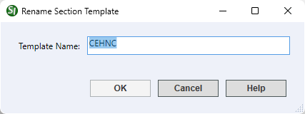

This command can only be executed from the SpecsIntact Explorer's Section Templates Right-click menu.
The Rename option provides a straightforward way to modify the name of the selected template. This feature is useful for correcting typos, aligning with new naming conventions, or simply updating a template's identifier to better reflect its content or purpose.
 Do not rename the system-generated Section Templates (e.g., SuppA, or UFGS). If you need to create a new template, you should first copy the Section Template and then rename the copy.
Do not rename the system-generated Section Templates (e.g., SuppA, or UFGS). If you need to create a new template, you should first copy the Section Template and then rename the copy.

 The OK button will execute and save the selections made.
The OK button will execute and save the selections made.
 The Cancel button will close the window without recording any selections or changes entered.
The Cancel button will close the window without recording any selections or changes entered.
 The Help button will open the Help Topic for this window.
The Help button will open the Help Topic for this window.
Users are encouraged to visit the SpecsIntact Website's Support & Help Center for access to all of our User Tools, including Web-Based Help (containing Troubleshooting, Frequently Asked Questions (FAQs), Technical Notes, and Known Problems), eLearning Modules (video tutorials), and printable Guides.
| CONTACT US: | ||
| 256.895.5505 | ||
| SpecsIntact@usace.army.mil | ||
| SpecsIntact.wbdg.org | ||